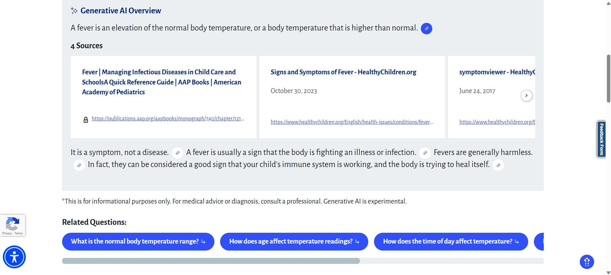
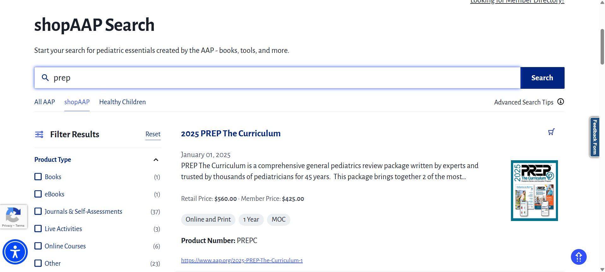
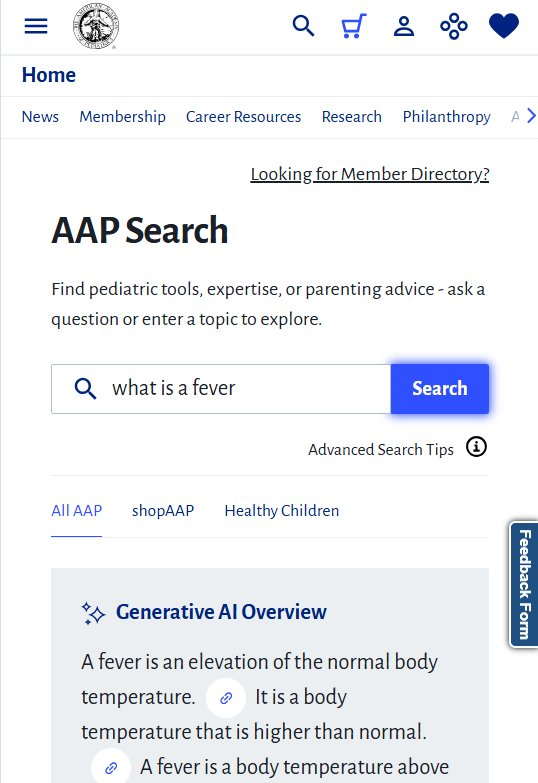
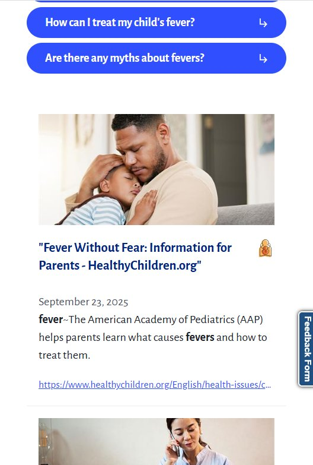

AAP Search Experience
An AI-driven search rebuild for the American Academy of Pediatrics, built on Google Vertex AI Search and Google Vertex AI Search for Commerce. Handles 13,000+ daily queries, with generative AI summaries and suggested follow-up questions.

- Client
- American Academy of Pediatrics
- Role
- Lead Developer
- Date
- September 2025
- Skills
- Google Vertex AI Search React TypeScript C# Optimizely CMS
- Visit
- aap.org/en/search →
Building the new search experience for the American Academy of Pediatrics was both challenging and rewarding. We moved away from a keyword-based search implementation to one that brought AAP a “Google-quality” search using Google Vertex AI Search and Google Vertex AI Search for Commerce. Google Vertex AI Search uses semantic search to understand what the user is actually asking, instead of relying on matching keywords. It also provides additional features like a generative AI overview to give users information quickly, grounded with citations, and suggested follow up questions to help users get to the information they need. We found that search result quality improved drastically with this new implementation.
For the e-commerce experience, Google Vertex Search for Commerce allows users to find products quickly, filter results, and view recommendations based on their past behavior.
This project was a first both for myself and my company. As the lead developer, I dove into learning about Google Vertex AI Search. It was challenging to gather information, navigating a maze of documentation and rapid feature updates.
We began with a research and development phase, where I focused on identifying what Google Vertex AI Search could do, and I worked with my team to build a proof of concept to demonstrate this. After that, I worked with our design team to ensure that we designed an updated search experience that is tailored to the features Google Vertex AI Search offers.
Lastly, we entered development to bring this to life. We built the new search page using React and TypeScript. The backend included a new page using Optimizely CMS as well as C# Web API controllers that used Google’s SDKs to interact with Google Vertex AI Search and send data to the new React application.
The new search provides an updated experience to the Academy’s 67,000 members. It supports 13,000+ daily queries from 1000+ daily users.



